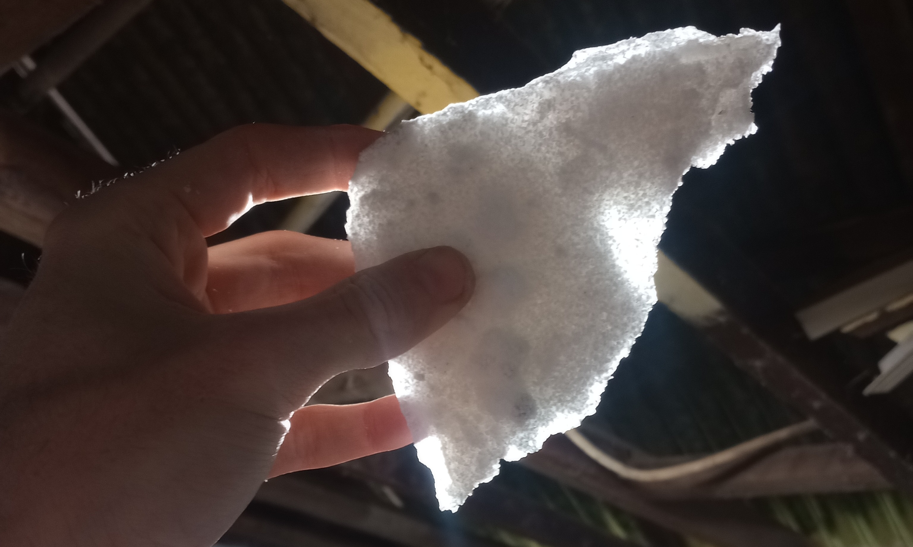
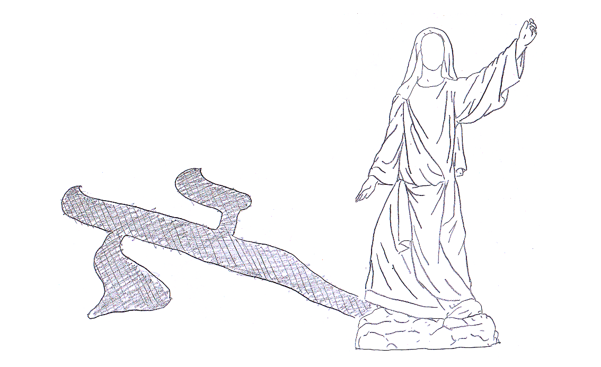
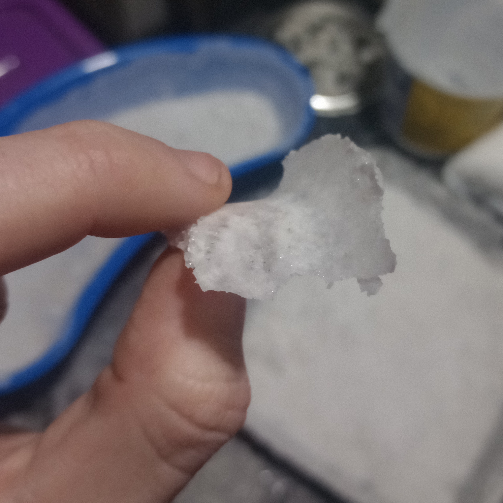
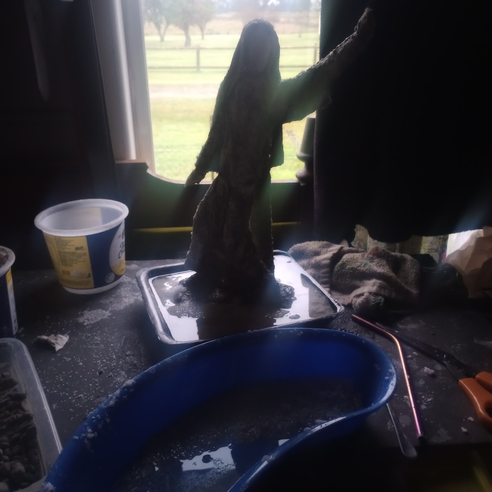
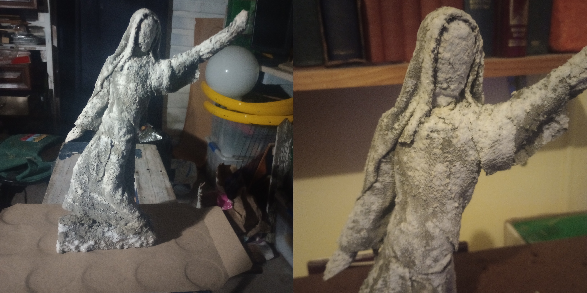
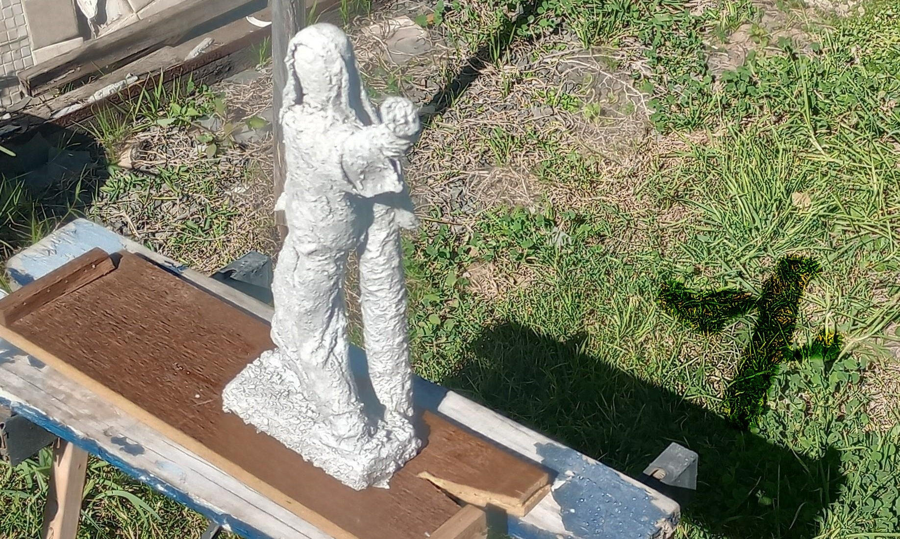
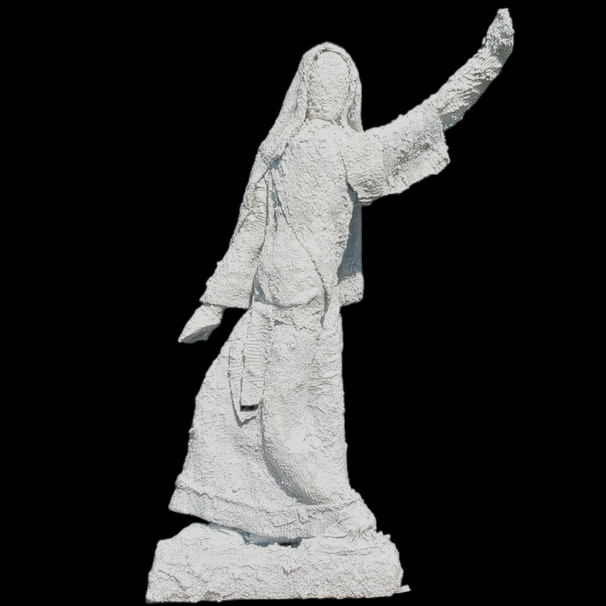

Separate dry pieces can be layered onto one another and melded together with repeated applications of salt solution between them as a binding agent.
I also realised that the coarse layers end up opaque with a slightly greyish hue, but the thinner fine pieces remain transparent and let light through fairly well.

I was inspired to start drafting a design for a statuette of Lot's Wife, made entirely out of salt. It would need to be a feminine figure, mid-stride, turning to look backwards, with one hand raised as if attempting to shield her gaze.
Furthermore, I hoped I could design it such that the shape and disparate thickness of her body and shawl would appear to cast a shadow in the shape of the first Hebrew letter Aleph (ℵ), when illuminated and viewed from above from the direction she's looking.
As if the viewer themselves were looking down on her as God, and can see the divine punishment her action is inducing.

Her head, torso, and limbs could be fairly easily cut from coarse salt bricks and fastened in place together on an armature base and column.
Her shawl would need to be put together using a number of precisely designed smaller curved pieces very delicately layered onto one another over her body.

I slowly worked on it for months. Assembled the larger parts first, then kept the whole thing wet and saturated as I readied each smaller layer for application so the whole thing didn't prematurely dry out or crack apart.

Eventually I got it to a decent enough state for a foot-tall first prototype that I could consider it done and let it set. The form is alright, and working out the process was certainly instructive, but there's a lot that could be improved. I'd still like to try for a second, larger, version - maybe even life-size - before the end of the year.
I love working on art pieces that explore new mediums, and that feel like they balance novelty and purpose. I like to think that's the same attitude that spurred on a lot of the Renaissance masters. I believe in aiming high. I've got big aspirations to do a gallery show of biblically inspired pieces some day.
And I hope something like this could be a part of it.

Imagine looking down on a full-sized and refined version of this statuette from an illuminated overhead catwalk.
I think it would be a very effective piece.

I'll shelve the prototype for now and wait for an opportune time to revisit the concept.

last major update: September 2026